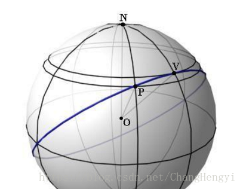
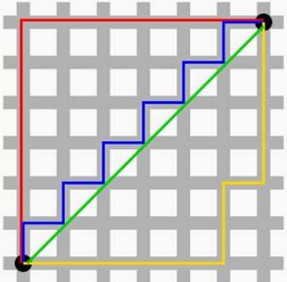
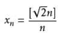
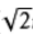

在学习机器学习的同学如果对SVM中的核函数进行深究，一定会见到再生核希尔伯特空间（RKHS）这个概念，其他理工科的同学往往也会在书中遇到希尔伯特空间这样的字眼，还有什么巴拿赫空间、赋范线性空间等等。但是非理学院的同学遇到这些字眼往往会被吓到，或者觉得好高大上。但是，这些概念其实一点都不难，读了今天我的文章，希望大家可以理解好这些概念，至少以后不会被它们吓到， 如果只是想知道希尔伯特空间是什么，那看到相应的章节不再往下看就好。
BTW，第一次写博客，讲的比较多，生怕说不明白，大神们不要嫌烦就好，如果你前面的感觉都知道可以从中间开始看。
什么是数学中的空间
我们知道数学的特点就是抽象，数学家喜欢把问题的本质抽象出来，而不再是只针对具体的问题，所以现代数学喜欢 以集合为研究对象，比如你想研究你们班上的同学，那么你的研究对象就是由你们班上所有同学组成的集合，比如你做机器学习想分析一组数据，那么你要研究的集合就是由每一个数据组成的集合。所以，看到这里我们明白了，数学家们在研究问题时首先要明确研究的对象。
有了研究的对象，还需要什么呢？那就是你的研究对象所需要遵循的规则。比如你要研究你们班谈恋爱的状况，刚刚说了，每一个同学是集合中的一个元素，既然你要研究的问题是你们班的恋爱状况，那你就要定义一个恋爱关系。比如我这么定义，班里每一个同学可以和另一名同学（不能和自己）之间建立恋爱关系（没有规定必须是异性恋）。好了，我定义完了，于是我们就得到了一个 赋有某种规则的班上同学的 集合，当然你的定义可以和我不一样，比如你思想很open，你觉得一个人可以和几个人保持恋爱关系，那么fine，你按照你的定义来就好， 定义了之后的规则就变成了公理，以后的任何操作以及推到都只能在公理的基础上进行。我们可以把这个定义了恋爱规则同学的集合叫做一个 同学恋爱空间。如果你说：“同学之间不只有恋爱关系啊，还有纯洁的友谊。”好呀，如果你也需要研究交友关系，那么你再按照你心目中的定义，定义一下交朋友的原则就好了。如果你在同学恋爱空间的基础上又加入了交朋友的定义，那么恭喜你，你就得到了一个同学恋爱交友空间。那么得到了这个空间有什么用呢？你就可以在这个空间里研究你们班同学的恋爱和交友关系了，但是你的一切研究包括推倒、计算，都必须基于你定义的公理，不能按照自己的常识，不然你就又把抽象的东西具象化了，这就失去了抽象出来的意义。
好，如果大家不厌其烦的看完了上面的例子，那么可以明白数学中谈到的空间需要有两部分组成， 研究的对象和 内在的规则，或者叫做 元素和 结构，有了这些我们就可以在这基础上研究我们感兴趣的问题。
好了，讲完了什么是空间，我们来看几种数学中的空间，看完之后你将明白它们的含义和关系。
线性空间
线性空间就是 定义了加法和数乘的空间。
先来说一种我们最常见的空间吧，那就是线性空间，线性空间是什么意思呢？这里就不从 群、 环、 域的概念开始讲了，什么对加法封闭、零元、负元啥的，不然就又变得像课本一样吓人了，我们力求用通俗又不失严谨的话把问题解释清楚。大家可以时刻回想之前举得例子，元素和结构。那线性空间中的元素是什么呢，这不重要，可以是任何东西， 线性空间强调的是空间中的元素满足线性结构。
那如何才能得到线性结构呢，我们需要定义 加法和 数乘。定义加法和数乘需要8条公理，这里就不放了，免得大家头大，线性代数课本上第一章都会有。这里想说的是，加法和数乘在我们生活中是想当然的概念，小学生也知道，一条狗加一条狗等于两条狗，一条狗乘以3等于三条狗。但其实我们在数学中不能够想当然，一切东西都要先定义了才可以使用，这里的加法和数乘和大家从小到大接触的没什么两样。
定义了加法和数乘，空间里的一个元素就可以由其他元素线性表出，这就是线性空间。
度量空间
度量空间就是定义了 距离的空间。
这里的距离就要好好的和大家掰扯掰扯了，因为它不像加法和数乘这样的想当然。如果我问你什么是距离，你回答两点之间的连线的长度的话，那说明你还是naive。如果在地球上，你想从中国去美国，走直线的话你可能要穿过地心，但是这是不可能的，所以地球上两点之间最短的距离应该经过两个点的直径为地球直径的大圆上的一部分。

设想另一个场景，你在做出租车，从城市的一个地方去另一个地方，因为道路都是网格型的，你也不可能让司机从楼中穿过，所以你走的最短路线是一条折线，实际上，这种距离叫做 曼哈顿距离。

事实上，还有很多种不同距离的定义方式，例如闵可夫斯基距离，马氏距离，切比雪夫距离等等，我们最常用的两点之间的连线叫做欧式距离。
我们可以按照我们的需要或者具体问题的具体情况，用不同的方式来定义距离。那么到底什么是距离呢， 说白了距离就是两个点（元素）对应一个数，x,y是集合中的两个元素，那么x,y的距离d(x,y)是由x,y这两个元素决定的一个数。
那么我们是不是可以按照任何我们想要的方式来定义距离呢，并不是，因为稍有常识的人都知道，距离不能是负的，负的距离我们不知道是什么意义，一个点和自己的距离应该是0，不然我们会感觉很奇怪。其实在定义距离时，有三条公理必须遵守，这三条公理来源于我们对距离的常识：
（1）非负性、同一性：d(x,y)≥0，当且仅当x=y时取等号;
（2）对称性：d(x,y)=d(y,x);
（3）三角不等式：d(x,z)≤d(x,y)+d(y,z)。
如果可以满足以上三条，那么任何定义距离的方式都是OK的。
一个定义了距离的空间我们把它成为 度量空间。
赋范空间
赋范空间就是定义了 范数的空间。
学理工科的都听过范数的概念，简单理解，x的范数||x||就是x的长度。那么这里的长度和上一节中说的距离到底有什么区别呢。距离的概念是针对两个元素来说的，例如d(x,y)指的是x与y两个元素之间的距离，而 范数是针对一个元素来说的，每一个元素都对应一个范数，可以将范数理解为一个元素到零点的距离（这只是一种理解，并不是定义），也就是它自己的长度。定义范数和距离一样也要满足一些要求：
（1）非负性：||x||≥0；
（2）||ax||=|a| ||x||，即里面的数乘可以提出来；
（3）三角不等式：||x||+||y||≤||x+y||。
我们依然可以任意定义范数，只要满足以上三条。
不知道大家有没有发现，如果我们定义了范数，可以在这基础上定义距离：d(x,y)=||x-y||。根据范数的三条性质，我们可以证明我们这样定义的距离也满足距离的定义，聪明的你可以自己证明一下（对称性的证明，提一个-1出来，一加绝对值就是1了）。
也就是说范数其实是一个更加具体的概念，有了范数 一定能利用范数定义距离，但是有距离不能定义范数。
也许你会问，你不是说理解范数就是一个元素到零点的距离吗，那定义范数为||x||=d(x,0) 不就行了吗。这样的话，对于范数的第二条性质就不一定会满足，||ax||=d(ax,0)，而d(ax,0)不一定等于|a|d(x,0)，具体等不等于还要看你的距离是怎么定义的。
线性赋范空间
线性赋范空间，就是把上面的性质加到一起呗， 就是定义了加法、数乘和范数的空间。
有了之前的解释，这就应该很好理解了，不同的空间只是加的条件不一样。就像是，植物、水果、热带水果、热带植物……这些概念的关系。
巴拿赫空间
巴拿赫空间就是 完备的赋范空间。
赋范空间是什么意思之前已经说过了，那 完备的空间又是什么意思呢？
我们先来看一下令人头大的定义： 如果一个空间是完备的，那么该空间中的任何一个柯西序列都收敛在该空间之内。
现在我将慢慢解释这个定义，首先来说一下柯西序列是什么，柯西序列就是随着序数增加，值之间的距离越来越小的序列。换一种说法是，柯西序列可以在去掉有限个值之后，使任意两个值之间的 距离都小于任意给定正常数（其实这就是定义了一个极限而已）。
那么任意一个柯西序列都收敛在该空间内是什么意思呢，举个例子你就明白了。
设定义在有理数空间Q上的序列： ，其中[x]表示x取整数部分。
对于这个数列来说，每一个元素的分子分母都是整数，所以每一个xn都在有理数空间Q上，那这个序列的极限呢，稍有常识的人都能看出，这个序列的极限是 ，而这并不是一个有理数，所以这个柯西序列的极限不在该空间里面，也就是说有理数空间Q是不完备的。
所以完备的意义我们可以这样理解，那就是 在一个空间上我们定义了极限，但是不论你怎么取极限，它的极限的值都不会跑出这个空间，那么这个空间就是完备空间。
另外，不知道你有没有发现，上面在解释什么是柯西序列的时候，有一个词我加了下划线，那就是距离，也就说说在定义完备空间之前，要先有距离的概念。所以 完备空间，其实也是完备度量空间。
所以，巴拿赫空间满足几条特性呢：距离、范数、完备。
内积空间
定义了内积的空间就是内积空间
。
内积就是我们所说的点乘、标积，它的定义方式也不是唯一的，但如同距离范数的定义一样，内积的定义也要满足某些条件，不能随便定义。具体的条件这里便不再展开，大家可以去看线性代数书或者直接百度。
内积对我们来说并不是一个陌生的概念，我们从中学就开始接触向量的点乘。也能够初步的理解它的意义， 只有定义了内积，才会有夹角的概念，才会有正交的概念，另外内积也可以定义范数，也就是说内积是比范数更具体的一个概念。内积的好处大大的有，在理工科的各个领域都有着极其重要的作用，这里不再详细讨论。
欧式空间
欧式空间使我们经常听到的概念， 它就是定义了内积的有限维实线性空间。
别看它的定义一大长串修饰，其实每一个都是我们生活中常见的概念，可以说我们脑海中对真实世界的认识最接近于欧式空间。我们想当然的距离、长度、夹角等计算都在欧式空间中定义了。
希尔伯特空间
终于迎来了我们今天的主角， 希尔伯特空间就是完备的内积空间。
未完待续…………